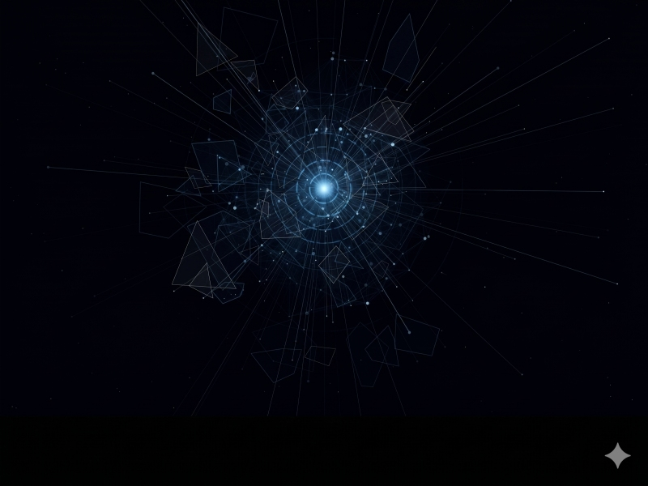
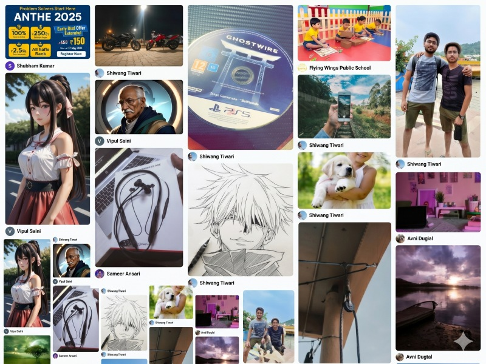
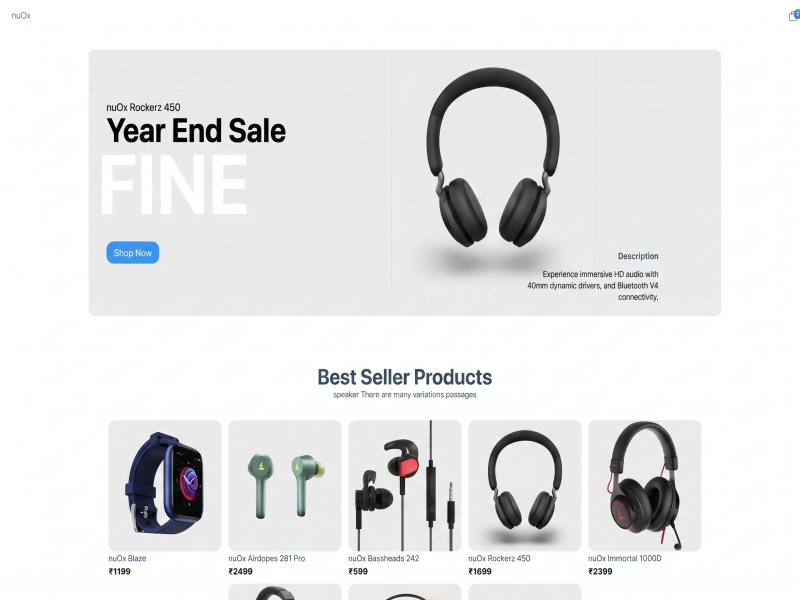

I build for
the web.
Four and a
half years deep.
CRMs, dashboards, marketing surfaces, scale frontends. Components, performance budgets, the actual pixels that ship to users. This is the engineering side of me.
Where I started
02 / ORIGINBhiwadi kid. Modern Public School for the basics, then B.Tech in Computer Science at MDU Rohtak. Picked up a keyboard early and never really set it down.
First job was at XRM Labs, doing CRM development in .NET and C#. That's where I learned what "production" actually means. Tickets, customers, the weight of a system that other people depend on.
Then React landed, and frontend became where I lived. The pace, the immediacy, watching pixels appear five seconds after you write code. That's the loop that got me hooked.
"Four and a half years of shipping. The framework changes; the discipline doesn't."
The work
03 / EXPERIENCEBuilding learning surfaces at scale. React, Next.js, performance work, design-system contributions.
Production React. TypeScript adoption, component libraries, the move from "make it work" to "make it last".
React-first frontend role. The year I went deep on hooks, state patterns, and the architecture decisions behind "feels fast".
.NET, C#, React Native. The first job. The one that taught me how a real engineering team operates.
Where I studied
04 / EDUCATIONFormal training and the unstructured side of it. The first taught me how systems are supposed to work. The second taught me what it actually takes to build them.
Picked up the fundamentals that still hold up today. DSA, operating systems, DBMS, computer networks, OOP. Coursework was theory-heavy, so I spent most evenings shipping side projects to keep the practical side sharp.
Physics, Chemistry, Mathematics. The years that made me comfortable thinking in equations and proofs, which is most of what programming actually rewards.
The stuff that actually got me hired. React deep dives, system design walkthroughs, reading codebases on GitHub, watching how senior engineers structure problems. The rule I follow: if I can't explain a tool to someone in two minutes, I don't know it yet.
Things I shipped
05 / PROJECTS
A Jarvis-style personal AI assistant. Voice-first, formal-with-dry-wit. HUD with crystal orbs, shards, rays. Electron + React + Python + Claude Brain + Whisper.

A social platform built end-to-end. Posts, feeds, identity. Every layer learned by building.

Full e-commerce surface. Catalog, cart, checkout. Edge cases all the way down.
The toolkit
06 / SKILLSFour years in production has narrowed my list. These are the tools and patterns I reach for first, the ones I trust to ship.
Find the engineer.
Move cursor right to meet the other side →